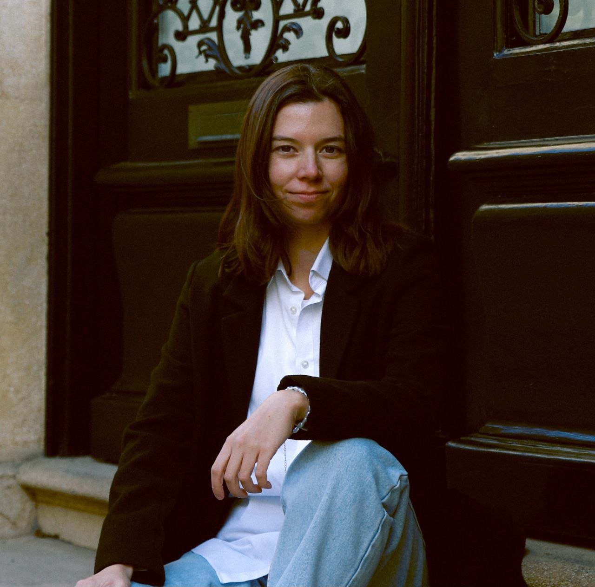
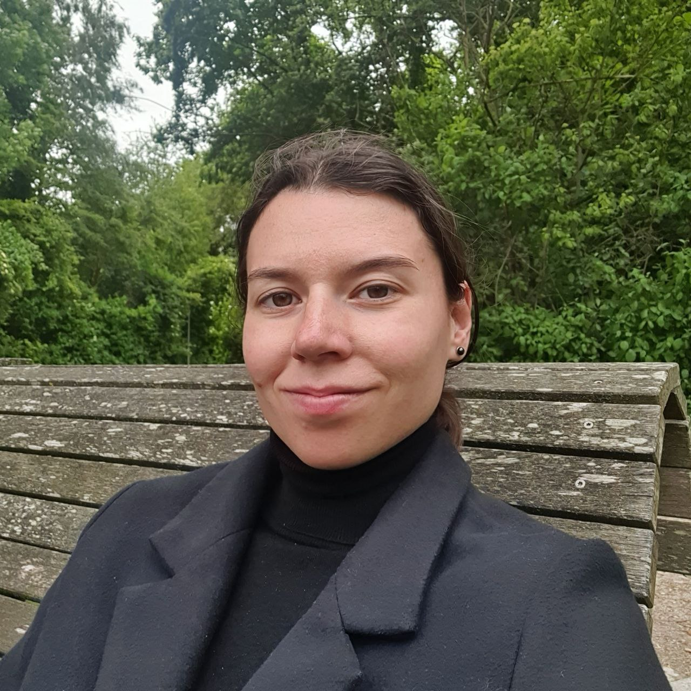

Bio
Short Bio
Dr. Daryna Dementieva is a postdoctoral researcher at the Technical University of Munich, where she leads the research agenda on Democratic and Responsible AI and Language Technologies. Her work spans AI for societal domains, like, harmful-content mitigation, massively multilingual benchmarks for low-resource languages, efficient LLMs, and explainable AI. Her work has received international recognition, including the ACL Best Resource Paper Award, recognition from UNESCO, and several millions downloads of designed models and datasets.
Bio for Talks
Dr. Daryna Dementieva is a postdoctoral researcher at the Technical University of Munich (TUM), where she leads the research agenda on Democratic and Responsible AI and Language Technologies. Her work spans AI applications in societal domains, such as proactive mitigation of hate speech and misinformation; massively multilingual benchmarks and resources for low-resource languages, including Ukrainian; efficient LLMs under resource constraints; and explainable AI decisions. Currently, she focuses on rigorous evaluation of reasoning and of LLM applications in high-risk societal domains. She received her PhD from Skoltech in 2022 with a dissertation on methods for fighting harmful multilingual textual content. Dr. Dementieva has authored more than 50 peer-reviewed papers, and her work has been recognised with the ACL 2025 Best Resource Paper Award and by UNESCO. She organises the NLP for Positive Impact workshop and the TextDetox and LLMs with Limited Resources shared tasks, and her open-source models and datasets have been downloaded more than 3 million times.
Photos
Free to use for talk announcements, programmes, and websites. [Photo credit: Name]


Extended Bio
I am a postdoctoral researcher in the Data Science and Analytics Group at the Technical University of Munich (TUM), working with Prof. Alex Fraser. I lead the research agenda on the Democratic and Responsible AI and Language Technologies: resource-efficient and transparent language technologies built for communities, public trust, and societal impact.
I am originally from Zaporizhzhia, Ukraine. The motto - "Per aspera ad astra" (Through hardships to the stars) - was the motto of my school which leads me still through life. I received my Bachelor's degree in Applied Mathematics from Taras Shevchenko National University of Kyiv and my Master's degree in Applied Mathematics and Physics from the Moscow Institute of Physics and Technology (MIPT). Both focused on system analysis and automated decision-making — the thread that still runs through my research. I then received my PhD from the Skolkovo Institute of Science and Technology (Skoltech), advised by Prof. Alexander Panchenko. My dissertation, Methods for Fighting Harmful Multilingual Textual Content, developed multilingual NLP methods to combat toxic speech and fake news.
My own path into research was not straightforward: it took me across several countries and between industry and academia. I know how much the right support matters along the way, so I make a point of mentoring students and researchers with non-linear careers and life paths.
Outside research, I enjoy sports — windsurfing, running, and functional training — travelling (32 countries so far), photography, and reading, especially philosophy and feminism.
I stand with Ukraine.
Photos
Free to use for talk announcements, programmes, and websites. [Photo credit: Name]